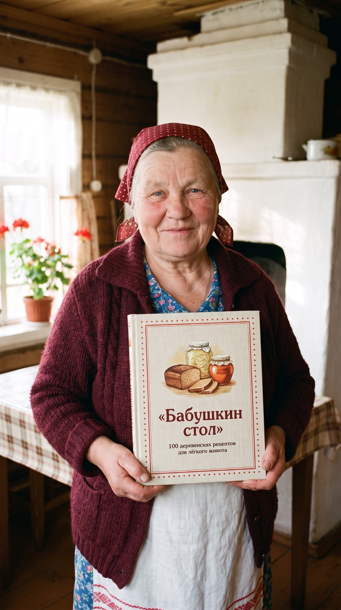

100 деревенских рецептов для лёгкого живота. Квашеная капуста, хлеб на закваске, кисели, каши и мёд с пасеки — простая еда, после которой не тяжело.

Хочу книжку 7 рецептов дарома ещё:
С неё всё начинается. Если научишься квасить капусту — считай, половину книжки уже знаешь.
Что нужно:Остальные 99 — в книжке. Так же подробно: граммы, шаги и мои советы.
один раз и навсегда · 100 рецептов + PDF + приложение
⚡ Оплатить по СБП Картой или звёздами TelegramБаба Зоя — собирательный образ деревенской бабушки. Рецепты в книжке — из деревенских тетрадей, проверенные на обычной городской кухне: без печки, без редких продуктов, без хитростей.
Это домашняя еда, а не лечение. Если есть болезни желудка, аллергия на мёд, беременность или готовишь для детей — сначала посоветуйся с врачом. Мёд нельзя детям до года.
Сразу после оплаты баба Зоя пришлёт в Telegram кнопку «Открыть всю книжку» (приложение с поиском и таймерами) и PDF-файл. Они остаются у тебя навсегда.
Telegram бесплатный, ставится за минуту. Вся книжка, приложение и ответы бабы Зои живут там.
Можно. В чате бабы Зои напиши /gift — после оплаты придёт открытка со ссылкой, перешлёшь её тому, кому даришь.
Нет. Всё из обычного магазина, по шагам, с граммами. Печка не нужна — хватит духовки.
Напиши в чат бабы Зои @BabaZoya_bot — внучка ответит.